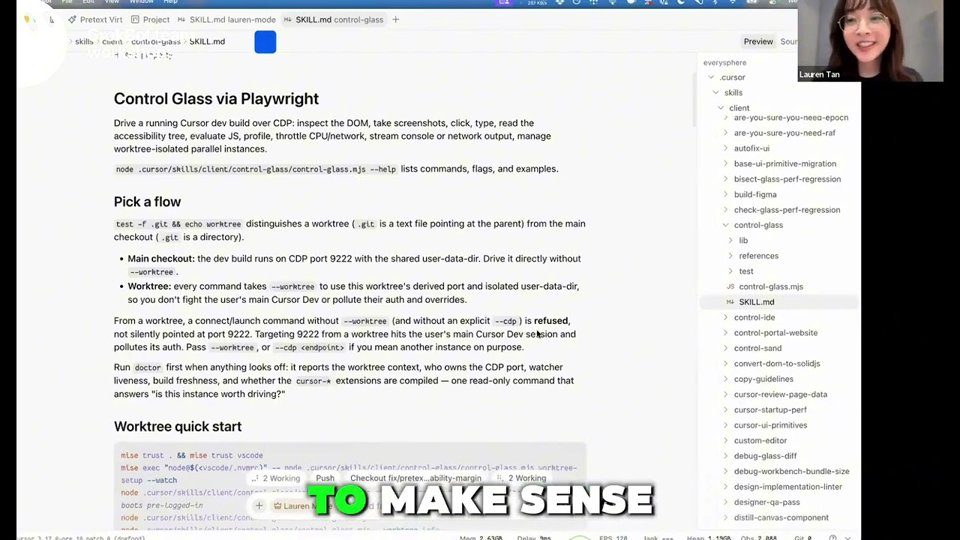

2026 · Maven
How Cursor Turned AI Agents Into Better Engineers

Viewing notes
In this lesson hosted by Colin Matthews, Tan gives her agent a feature map to go with its ability to click through an application. That map records how a user reaches a feature and what they should see. Watch what happens when Benny gets a bug report: it reproduces the old problem, then establishes that the main branch already contains the fix. The useful output is evidence, and an unnecessary patch disappears from the queue. The YouTube link is a public repost of the lesson.